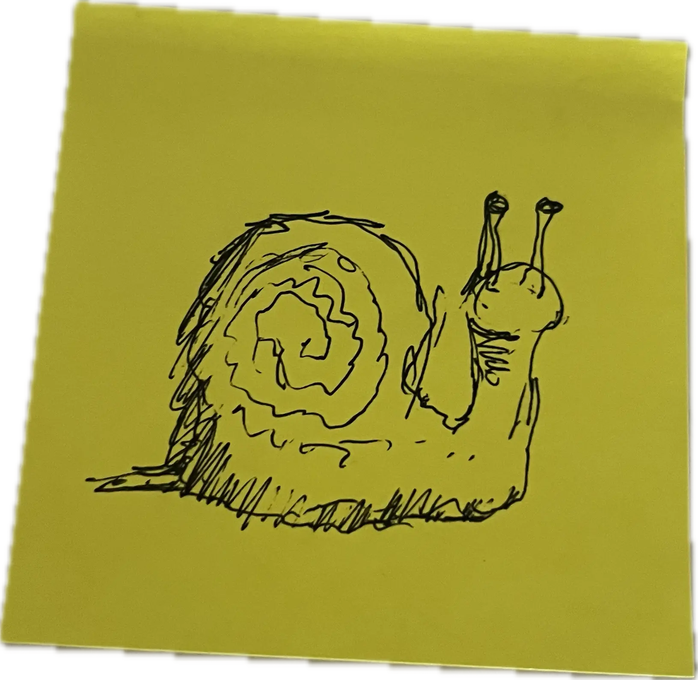

@celine/celine

@celine/celine is a library for building reactive HTML notebooks with display: block contenteditable <script> elements.
It wraps a subset of the Observable Notebook runtime to power inter-cell reactivity, just like Observable Framework and Quarto. It aims to make it easier to publish research as HTML files rather than as PDF files.
I initially considered calling this library incel, short for inline cell
, but was advised against it.
| GitHub | MaxwellBo/ |
License | MIT |
|---|---|---|---|
| JSR | jsr.io/ |
Version | 6.1.0, |
Table of Contents
Usage
via CDN
Either use the cdn-starter.html template file
ORAdd the following <script> element to your HTML file's <head> block:
<script type="module">
import { CelineModule, registerScriptReevaluationOnBlur } from 'https://esm.sh/jsr/@celine/celine@6.1.0';
import * as Inputs from 'https://esm.run/@observablehq/inputs@0.12.0';
import * as htl from 'https://esm.run/htl@0.3.1';
window.celine = CelineModule.usingNewObservableRuntimeAndModule(document);
window.library = celine.library; /* @observablehq/stdlib */
window.Inputs = Inputs;
window.htl = htl;
registerScriptReevaluationOnBlur(document, /*class=*/'echo');
</script>
and link cell.css in your <head> block:
<link rel="stylesheet" href="https://esm.sh/jsr/@celine/celine@6.1.0/cell.css" />
You may want to include @celine/celine's drop-in stylesheet, libertine.css:
<link rel="stylesheet" href="https://esm.sh/jsr/@celine/libertine@16.0.0/libertine.css" />
Demo: Observable Plot + SQLite
Try removing a 0 from the WHERE condition, then click away from the <script> to blur and reevaluate.
SQLiteDatabaseClient docs
API
The following <styles>s are marked contenteditable and reevaluate on edit.
.echo
The .echo class can display <script> and <style> elements inline, using a font with built-in syntax highlighting.
Try changing the border thickness!
.echo has a dark mode. Set the class attribute to echo dark to enable:
.reflect
The .reflect class forces <script> and <style> elements to display their opening and closing tags, type, class, id / data-display, and contenteditable attributes (a little trick from This page is a truly naked, brutalist html quine).
All of the following <script>s are marked contenteditable and reevaluate on blur.
celine.cell(name, [inputs, ]definition)
The cell constructor declares a reactive cell called "${name}".
The definition can be T or (...inputs) => T, where T can be object, Promise<?>, Iterator<?>, or AsyncIterator<?>.
Cells render their current value above an element that has a data-display attribute the same as the cell's name. Thus, to render the counter value above the <script>, we set data-display="counter" on the <script>:
The cell constructor accepts inputs, a list of other cell names to depend on.
Here we use Hypertext Literal's html template literal, to transform the value of another cell:
A <script> declaring a cell can be hidden inside a <details>s element.
Show code
To display the cell's current value above the <details> element, rather than above the <script>, we add data-display="hue" to the <details> element, as the cell's name is "hue":
celine.viewof(name, [inputs, ]definition)
The viewof constructor is a special constructor designed to work with Observable Inputs.
It declares 2 reactive cells: a cell called "${name}", and a cell called "viewof ${name}" - one for the value, and one for the DOM element itself.
To display the DOM element above another element <script>, set data-display="viewof ${name}" on the element to which the input should be prepended.
Here, we want to display an input above the <script> element, so we set data-display="viewof password" on the <script>:
We still have to depend on the cell called "password" to use the input's value:
For further information on how to create custom inputs, see the Synchronized Inputs guide.
celine.silentCell(name, [inputs, ]definition)
The silentCell constructor declares a cell that doesn't need an element annotated with
data-display="${name}" declared in the HTML. It is useful for cells that are used as inputs to other cells, but whose values do not need to be displayed.
celine.mutable(name, value) / celine.silentMutable(name, value)
The mutable (and silentMutable) constructor declares a cell and returns a reference that can be mutated. Mutations propagate to cells that depend upon it.
celine.import(source, cells)
The import method imports cells from Observable Notebooks, emulating Observable's import syntax. The source can be an Observable notebook URL (e.g. https://observablehq.com/@mjbo/celine-celine-import-target) or an API URL (e.g. https://api.observablehq.com/@mjbo/celine-celine-import-target.js?v=4).
The target notebook @mjbo/celine-celine-import-target defines:
importMeUnchanged = "importMeUnchanged" renameMe = "renameMe" overrideMeWithANumber = 0 out = overrideMeWithANumber * 10
which we can import, with aliases and overrides:
Observe that theoverrideMeWithANumber cell is overridden with the value of the counter cell, and the out cell is the product of overrideMeWithANumber and 10.
Let's try and import something with a complex dependency tree:
celine.library / Observable standard library
There are many useful utilities in the Observable standard library. Inspect the contents of the celine.library object:
TeX
celine.tex
Because rendering TeX is so useful, @celine/celine provides a shorthand template literal, celine.tex:
Because cells render their contents display: inline (celine ⇒ cell inline
), we can embed the script in the middle of the <p> element.
In non-demonstration use, we'd also leave off the .echo and .reflect classes, to render inline.
To render TeX centered, wrap the <script> with a <div style="text-align: center">:
Both tex template literals are unconfigurable. You will need to import the KaTeX library proper if you'd like to modify any of its options.
Markdown
celine.md
Markdown also has a shorthand template literal, celine.md:
Graphviz
Mermaid
Leaflet
DuckDB
1st-party library pairings
@celine/libertine
@celine/libertine provides a stylesheet based around the Linux Libertine typeface, one common in academic typesetting.
Information about it lives on a subpage, /libertine.
@celine/bibhtml
@celine/bibhtml is a Web Components-based referencing system for HTML documents.
Information about it lives on a subpage, /bibhtml.
3rd-party library pairings
Some libraries that pair well with @celine/celine are:
Pyodide
Pyodide is a port of CPython to WebAssembly.
WebR
WebR is a version of the statistical language R compiled for the browser using WebAssembly, via Emscripten.
Penrose
Penrose, a system for creating beautiful diagrams just by typing notation in plain text.
Using the Using Penrose with Vanilla JS instructions:
Show code
Bloom lets you build optimization-driven interactive diagrams in JavaScript.
Try dragging the circles around!
Show code
changelog.xml 
@celine/celine uses Semantic Versioning 2.0.0.
Showing 10 most recent entries.
| Version | Date | Changes |
|---|